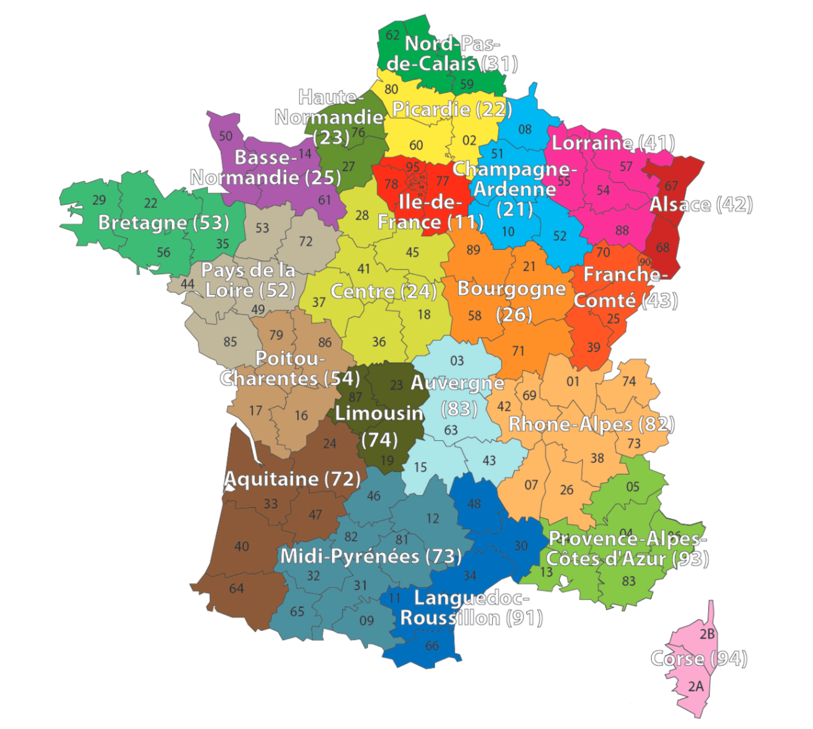
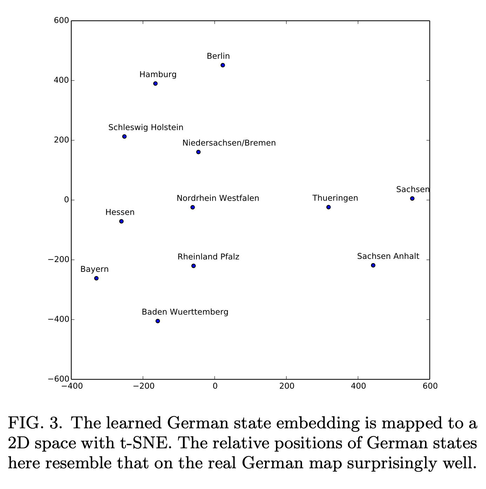
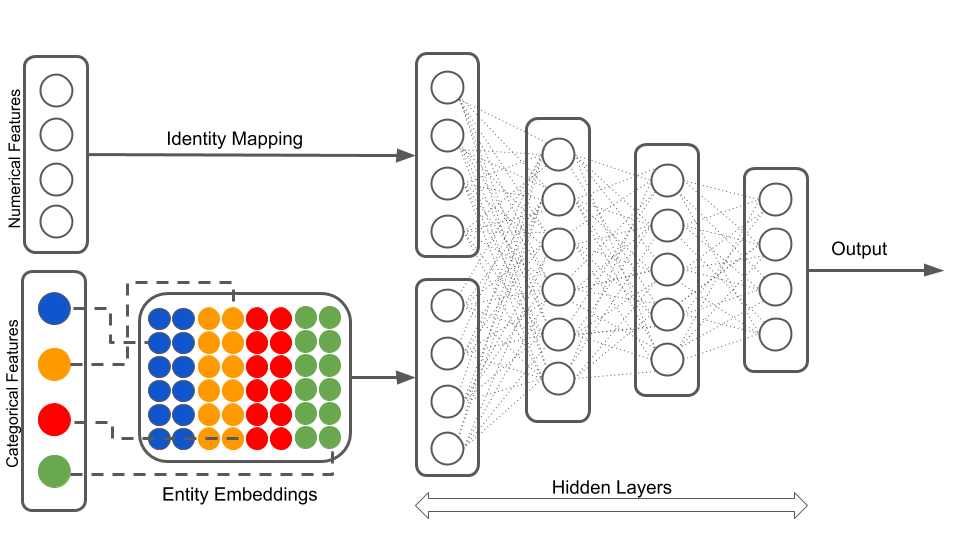
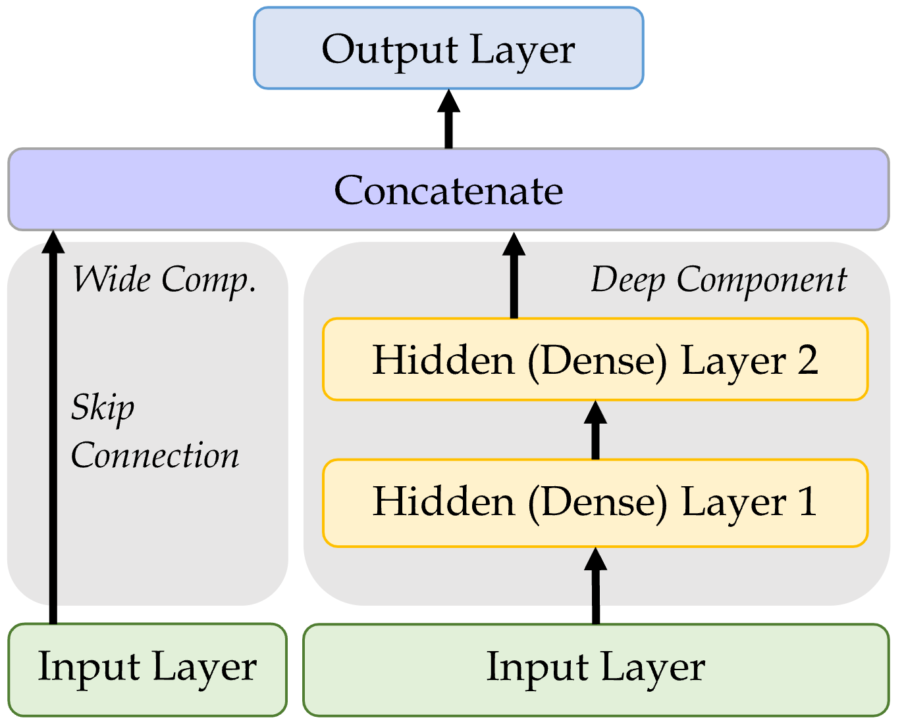

import random
from pathlib import Path
import matplotlib.pyplot as plt
import numpy as np
import pandas as pd
from keras.models import Sequential, Model
from keras.layers import Dense, Input, Embedding, Reshape, Concatenate
from keras.callbacks import EarlyStopping
from keras.utils import plot_model
from sklearn import set_config
from sklearn.datasets import fetch_openml
from sklearn.model_selection import train_test_split
from sklearn.preprocessing import OneHotEncoder, OrdinalEncoder, StandardScaler
from sklearn.compose import make_column_transformer
set_config(transform_output="pandas")Entity Embedding
ACTL3143 & ACTL5111 Deep Learning for Actuaries
Patrick Laub
Entity Embedding
Lecture Outline
Entity Embedding
The French Motor Dataset
From One-Hot Encoding to Embeddings
Keras’ Functional API
French Motor Dataset with Embeddings
Scale by Exposure
Each category used to be a column
When we preprocessed categorical variables, one-hot encoding gave a column for every category, so you could always read off what each number meant:
| Category | One-hot vector |
|---|---|
R11 |
[\,1,\, 0,\, 0,\, \ldots,\, 0\,] |
R24 |
[\,0,\, 1,\, 0,\, \ldots,\, 0\,] |
R93 |
[\,0,\, 0,\, \ldots,\, 1,\, 0\,] |
Each column means one specific category, but the vector is sparse (mostly zeros) and long (one entry per category), and every category sits the same distance from every other.
Entity embeddings: short, dense & learned
An entity embedding (Guo & Berkhahn, 2016) replaces that sparse column-per-category block with a short, dense vector that the network learns during training:
\text{R11} \;\longrightarrow\; [\,0.07,\; -0.42\,], \qquad \text{R24} \;\longrightarrow\; [\,0.11,\; -0.39\,]
- the vector is short — e.g. 2 numbers instead of 22 columns;
- the dimensions are learned, not categories — there is no “
R11column”; - categories with a similar effect on the target tend to cluster together.
This is particularly useful when the categorical variable can take on a large number of different levels (it has high cardinality). Though, in that situation, rare levels are fit from very little data, so they may not be placed optimally.
It’s the same idea as word embeddings
- A word embedding is just an entity embedding where the “entity” is a word.
- Entity embedding applies the same trick to any categorical variable: region, vehicle brand, occupation, postcode, …
- Typically word embeddings are pre-trained on huge text corpora — i.e. it is a transfer learning technique — though here we have labels so learn the embeddings as part of the supervised task.
They are both, in essence, a lookup table of learned vectors.
The French Motor Dataset
Lecture Outline
Entity Embedding
The French Motor Dataset
From One-Hot Encoding to Embeddings
Keras’ Functional API
French Motor Dataset with Embeddings
Scale by Exposure
Imports needed for these demos
Revisit the French motor dataset
Code
| IDpol | ClaimNb | Exposure | Area | VehPower | VehAge | DrivAge | BonusMalus | VehBrand | VehGas | Density | Region | |
|---|---|---|---|---|---|---|---|---|---|---|---|---|
| 0 | 1.0 | 1.0 | 0.10000 | D | 5.0 | 0.0 | 55.0 | 50.0 | B12 | Regular | 1217.0 | R82 |
| 1 | 3.0 | 1.0 | 0.77000 | D | 5.0 | 0.0 | 55.0 | 50.0 | B12 | Regular | 1217.0 | R82 |
| ... | ... | ... | ... | ... | ... | ... | ... | ... | ... | ... | ... | ... |
| 678011 | 6114329.0 | 0.0 | 0.00274 | B | 4.0 | 0.0 | 60.0 | 50.0 | B12 | Regular | 95.0 | R26 |
| 678012 | 6114330.0 | 0.0 | 0.00274 | B | 7.0 | 6.0 | 29.0 | 54.0 | B12 | Diesel | 65.0 | R72 |
678013 rows × 12 columns
Source: Noll et al. (2020).
Data dictionary
| Variable | Description | Preprocessing |
|---|---|---|
IDpol |
Policy number (unique identifier) | Dropped |
ClaimNb |
Number of claims on the given policy | Target |
Exposure* |
Total exposure in yearly units | Normalised |
Area |
Area code (ordinal) | Ordinal Encode |
VehPower |
Power of the car (ordinal encoded) | Normalised |
VehAge |
Age of the car in years | Normalised |
DrivAge |
Age of the (most common) driver in years | Normalised |
BonusMalus |
Bonus–malus level between 50 and 230 (with reference level 100) | Normalised |
VehBrand* |
Car brand (nominal) | One-hot |
VehGas |
Diesel or regular fuel car (binary) | One-hot |
Density |
Density of inhabitants per km2 in the city of the living place of the driver | Normalised |
Region* |
Regions in France (prior to 2016) | One-hot |
* The three variables we single out later: Region & VehBrand get embeddings, and Exposure becomes an offset.
Source: Noll et al. (2020).
The model
Have \{ (\mathbf{x}_i, y_i) \}_{i=1, \dots, n} for \mathbf{x}_i \in \mathbb{R}^{47} and y_i \in \mathbb{N}_0.
Assume the distribution Y_i \sim \mathsf{Poisson}(\lambda(\mathbf{x}_i))
We have \mathbb{E} Y_i = \lambda(\mathbf{x}_i). The NN takes \mathbf{x}_i & predicts \mathbb{E} Y_i.
Note
For insurance, this is a bit weird. The exposures are different for each policy.
\lambda(\mathbf{x}_i) is the expected number of claims for the duration of policy i’s contract.
Normally, \text{Exposure}_i \not\in \mathbf{x}_i, and \lambda(\mathbf{x}_i) is the expected rate per year, then Y_i \sim \mathsf{Poisson}(\text{Exposure}_i \times \lambda(\mathbf{x}_i)).
What values do we see in the data?
Area
C 5514
D 4116
...
B 2387
F 444
Name: count, Length: 6, dtype: int64VehBrand
B1 4998
B2 4906
...
B11 283
B14 140
Name: count, Length: 11, dtype: int64VehGas
Regular 10658
Diesel 8092
Name: count, dtype: int64Region
R24 6493
R82 2112
...
R42 48
R43 26
Name: count, Length: 22, dtype: int64How we preprocessed last time
| VehGas_Regular | VehBrand_B10 | VehBrand_B11 | VehBrand_B12 | VehBrand_B13 | VehBrand_B14 | VehBrand_B2 | VehBrand_B3 | VehBrand_B4 | VehBrand_B5 | ... | Region_R91 | Region_R93 | Region_R94 | Area | Exposure | VehPower | VehAge | DrivAge | BonusMalus | Density | |
|---|---|---|---|---|---|---|---|---|---|---|---|---|---|---|---|---|---|---|---|---|---|
| 0 | 0.0 | 0.0 | 0.0 | 0.0 | 0.0 | 0.0 | 1.0 | 0.0 | 0.0 | 0.0 | ... | 0.0 | 0.0 | 0.0 | 0.0 | 1.129272 | 0.366510 | 0.223226 | 0.374405 | -0.524020 | -0.394690 |
| 1 | 0.0 | 0.0 | 0.0 | 1.0 | 0.0 | 0.0 | 0.0 | 0.0 | 0.0 | 0.0 | ... | 0.0 | 0.0 | 0.0 | 1.0 | 0.566087 | 0.366510 | 0.046100 | -1.131699 | 1.122382 | -0.381092 |
| 2 | 1.0 | 0.0 | 0.0 | 0.0 | 0.0 | 0.0 | 0.0 | 0.0 | 0.0 | 0.0 | ... | 0.0 | 0.0 | 0.0 | 2.0 | 1.129272 | -0.167408 | 1.108854 | -0.994781 | -0.641620 | -0.363309 |
3 rows × 39 columns
From One-Hot Encoding to Embeddings
Lecture Outline
Entity Embedding
The French Motor Dataset
From One-Hot Encoding to Embeddings
Keras’ Functional API
French Motor Dataset with Embeddings
Scale by Exposure
Region column

French Administrative Regions
Source: Wikimedia
One-hot encoding
['R24', 'R21', 'R53', 'R24', 'R82']| Region_R11 | Region_R21 | Region_R22 | Region_R23 | Region_R24 | Region_R25 | Region_R26 | Region_R31 | Region_R41 | Region_R42 | ... | Region_R53 | Region_R54 | Region_R72 | Region_R73 | Region_R74 | Region_R82 | Region_R83 | Region_R91 | Region_R93 | Region_R94 | |
|---|---|---|---|---|---|---|---|---|---|---|---|---|---|---|---|---|---|---|---|---|---|
| 0 | 0.0 | 0.0 | 0.0 | 0.0 | 1.0 | 0.0 | 0.0 | 0.0 | 0.0 | 0.0 | ... | 0.0 | 0.0 | 0.0 | 0.0 | 0.0 | 0.0 | 0.0 | 0.0 | 0.0 | 0.0 |
| 1 | 0.0 | 1.0 | 0.0 | 0.0 | 0.0 | 0.0 | 0.0 | 0.0 | 0.0 | 0.0 | ... | 0.0 | 0.0 | 0.0 | 0.0 | 0.0 | 0.0 | 0.0 | 0.0 | 0.0 | 0.0 |
| ... | ... | ... | ... | ... | ... | ... | ... | ... | ... | ... | ... | ... | ... | ... | ... | ... | ... | ... | ... | ... | ... |
| 3 | 0.0 | 0.0 | 0.0 | 0.0 | 1.0 | 0.0 | 0.0 | 0.0 | 0.0 | 0.0 | ... | 0.0 | 0.0 | 0.0 | 0.0 | 0.0 | 0.0 | 0.0 | 0.0 | 0.0 | 0.0 |
| 4 | 0.0 | 0.0 | 0.0 | 0.0 | 0.0 | 0.0 | 0.0 | 0.0 | 0.0 | 0.0 | ... | 0.0 | 0.0 | 0.0 | 0.0 | 0.0 | 1.0 | 0.0 | 0.0 | 0.0 | 0.0 |
5 rows × 22 columns
Train on one-hot inputs
num_regions = len(oh.categories_[0])
random.seed(12)
model = Sequential([
Input(shape=(num_regions,)),
Dense(2),
Dense(1, activation="exponential")
])
model.compile(optimizer="adam", loss="poisson")
es = EarlyStopping(verbose=True)
hist = model.fit(X_train_oh, y_train, epochs=100, verbose=0, validation_split=0.2, callbacks=[es])
hist.history["val_loss"][-1]Epoch 6: early stopping0.7679625153541565Make a fake batch of data
| R11 | R21 | R22 | R23 | R24 | R25 | R26 | R31 | R41 | R42 | ... | R53 | R54 | R72 | R73 | R74 | R82 | R83 | R91 | R93 | R94 | |
|---|---|---|---|---|---|---|---|---|---|---|---|---|---|---|---|---|---|---|---|---|---|
| 0 | 1.0 | 0.0 | 0.0 | 0.0 | 0.0 | 0.0 | 0.0 | 0.0 | 0.0 | 0.0 | ... | 0.0 | 0.0 | 0.0 | 0.0 | 0.0 | 0.0 | 0.0 | 0.0 | 0.0 | 0.0 |
| 1 | 0.0 | 1.0 | 0.0 | 0.0 | 0.0 | 0.0 | 0.0 | 0.0 | 0.0 | 0.0 | ... | 0.0 | 0.0 | 0.0 | 0.0 | 0.0 | 0.0 | 0.0 | 0.0 | 0.0 | 0.0 |
| ... | ... | ... | ... | ... | ... | ... | ... | ... | ... | ... | ... | ... | ... | ... | ... | ... | ... | ... | ... | ... | ... |
| 20 | 0.0 | 0.0 | 0.0 | 0.0 | 0.0 | 0.0 | 0.0 | 0.0 | 0.0 | 0.0 | ... | 0.0 | 0.0 | 0.0 | 0.0 | 0.0 | 0.0 | 0.0 | 0.0 | 1.0 | 0.0 |
| 21 | 0.0 | 0.0 | 0.0 | 0.0 | 0.0 | 0.0 | 0.0 | 0.0 | 0.0 | 0.0 | ... | 0.0 | 0.0 | 0.0 | 0.0 | 0.0 | 0.0 | 0.0 | 0.0 | 0.0 | 1.0 |
22 rows × 22 columns
tensor([[-0.0646, -0.2346],
[ 0.1463, -0.0323],
[-0.3050, -0.2913],
[ 0.0257, -0.3189],
[ 0.3848, -0.2778],
[ 0.0983, -0.4137],
[ 0.2235, -0.2502],
[ 0.1192, 0.3202],
[ 0.6295, -0.4385],
[ 0.2008, -0.0306],
[-0.2030, -0.3797],
[ 0.7612, -0.2256],
[ 0.5068, -0.0436],
[ 0.7867, -0.4326],
[-0.2026, -0.1788],
[-0.2430, -0.0941],
[ 0.8046, 0.0903],
[ 0.5057, -0.1617],
[-0.0351, -0.6517],
[ 0.0987, 0.2080],
[ 0.0298, 0.1496],
[ 0.3290, 0.4958]], grad_fn=<AddBackward0>)The first layer
((22, 22), (22, 2), (2,))array([[-0.06, -0.23],
[ 0.15, -0.03],
[-0.3 , -0.29],
[ 0.03, -0.32],
[ 0.38, -0.28],
[ 0.1 , -0.41],
[ 0.22, -0.25],
[ 0.12, 0.32],
[ 0.63, -0.44],
[ 0.2 , -0.03],
[-0.2 , -0.38],
[ 0.76, -0.23],
[ 0.51, -0.04],
[ 0.79, -0.43],
[-0.2 , -0.18],
[-0.24, -0.09],
[ 0.8 , 0.09],
[ 0.51, -0.16],
[-0.04, -0.65],
[ 0.1 , 0.21],
[ 0.03, 0.15],
[ 0.33, 0.5 ]])array([[-0.06, -0.23],
[ 0.15, -0.03],
[-0.3 , -0.29],
[ 0.03, -0.32],
[ 0.38, -0.28],
[ 0.1 , -0.41],
[ 0.22, -0.25],
[ 0.12, 0.32],
[ 0.63, -0.44],
[ 0.2 , -0.03],
[-0.2 , -0.38],
[ 0.76, -0.23],
[ 0.51, -0.04],
[ 0.79, -0.43],
[-0.2 , -0.18],
[-0.24, -0.09],
[ 0.8 , 0.09],
[ 0.51, -0.16],
[-0.04, -0.65],
[ 0.1 , 0.21],
[ 0.03, 0.15],
[ 0.33, 0.5 ]], dtype=float32)Just a look-up operation
array([[-0.06, -0.23],
[ 0.15, -0.03],
[-0.3 , -0.29],
[ 0.03, -0.32],
[ 0.38, -0.28],
[ 0.1 , -0.41],
[ 0.22, -0.25],
[ 0.12, 0.32],
[ 0.63, -0.44],
[ 0.2 , -0.03],
[-0.2 , -0.38],
[ 0.76, -0.23],
[ 0.51, -0.04],
[ 0.79, -0.43],
[-0.2 , -0.18],
[-0.24, -0.09],
[ 0.8 , 0.09],
[ 0.51, -0.16],
[-0.04, -0.65],
[ 0.1 , 0.21],
[ 0.03, 0.15],
[ 0.33, 0.5 ]], dtype=float32)Each category maps to one row of W + b — that row is its embedding. No matrix multiply needed.
Turn the region into an index
The Region value R11 gets turned into 0.
The Region value R21 gets turned into 1.
The Region value R22 gets turned into 2.Use an Embedding layer
Epoch 4: early stopping0.7677991390228271Aside: the output here is shaped (None, 1, 1), not (None, 1) — a harmless extra axis from the Embedding that we will tidy up later.
Keras’ Embedding Layer
array([[ 0.05, -0.07],
[-0.02, 0.03],
[-0.04, -0.02],
[ 0.09, -0.12],
[ 0.24, -0.22],
[ 0.16, -0.19],
[ 0.17, -0.17],
[-0.05, 0.09],
[ 0.36, -0.33],
[ 0.03, -0.01],
[ 0.02, -0.07],
[ 0.36, -0.3 ],
[ 0.21, -0.16],
[ 0.42, -0.37],
[-0.02, -0.02],
[-0.06, 0.02],
[ 0.26, -0.16],
[ 0.25, -0.21],
[ 0.15, -0.21],
[-0.01, 0.04],
[-0.04, 0.05],
[-0.04, 0.13]], dtype=float32)The embedding dimension
- Entity embedding is especially useful when there is a very large number of categories (such as 1,000 or 10,000) and you want to reduce the number of columns.
- The embedding dimension is really a hyperparameter to tune (e.g. by validation loss); there is no settled formula for it.
- One heuristic is to use n^{1/4} for a variable with n categories (The TensorFlow Team, 2017), but there’s no theoretical justification, and others disagree.
- In this case, a nice side benefit is that 2-dimensional embeddings can be plotted directly.
The learned embeddings


Embeddings improve during training

Embeddings move during training to wherever they need to be to minimise training loss.
Source: Marcus Lautier (2022).
Embeddings & other inputs

Illustration of a neural network with both continuous and categorical inputs.
We can’t do this with Sequential models…
Source: LotusLabs Blog, Accurate insurance claims prediction with Deep Learning.
Keras’ Functional API
Lecture Outline
Entity Embedding
The French Motor Dataset
From One-Hot Encoding to Embeddings
Keras’ Functional API
French Motor Dataset with Embeddings
Scale by Exposure
Converting Sequential models
0.7695862650871277random.seed(12)
inputs = Input(shape=(X_train_oh.shape[1],))
x = Dense(30, "leaky_relu")(inputs)
out = Dense(1, "exponential")(x)
model = Model(inputs, out)
model.compile(
optimizer="adam",
loss="poisson")
hist = model.fit(
X_train_oh, y_train,
epochs=1, verbose=0,
validation_split=0.2)
hist.history["val_loss"][-1]0.7695212364196777Wide & Deep network

Sources: Marcus Lautier (2022) & Aurélien Géron (2019), Hands-On Machine Learning with Scikit-Learn, Keras, and TensorFlow, 2nd Edition, Chapter 10 code snippet.
Naming the layers
For complex networks, it is often useful to give meaningful names to the layers.
input_ = Input(shape=X_train.shape[1:], name="input")
hidden1 = Dense(30, activation="leaky_relu", name="hidden1")(input_)
hidden2 = Dense(30, activation="leaky_relu", name="hidden2")(hidden1)
concat = Concatenate(name="combined")([input_, hidden2])
output = Dense(1, name="output")(concat)
model = Model(inputs=[input_], outputs=[output])Inspecting a complex model

{kind=link}
Model: "functional_5"
┏━━━━━━━━━━━━━━━━━┳━━━━━━━━━━━━━━┳━━━━━━━━━┳━━━━━━━━━━━━━━━┓ ┃ Layer (type) ┃ Output Shape ┃ Param # ┃ Connected to ┃ ┡━━━━━━━━━━━━━━━━━╇━━━━━━━━━━━━━━╇━━━━━━━━━╇━━━━━━━━━━━━━━━┩ │ input │ (None, 39) │ 0 │ - │ │ (InputLayer) │ │ │ │ ├─────────────────┼──────────────┼─────────┼───────────────┤ │ hidden1 (Dense) │ (None, 30) │ 1,200 │ input[0][0] │ ├─────────────────┼──────────────┼─────────┼───────────────┤ │ hidden2 (Dense) │ (None, 30) │ 930 │ hidden1[0][0] │ ├─────────────────┼──────────────┼─────────┼───────────────┤ │ combined │ (None, 69) │ 0 │ input[0][0], │ │ (Concatenate) │ │ │ hidden2[0][0] │ ├─────────────────┼──────────────┼─────────┼───────────────┤ │ output (Dense) │ (None, 1) │ 70 │ combined[0][… │ └─────────────────┴──────────────┴─────────┴───────────────┘
Total params: 2,200 (8.59 KB)
Trainable params: 2,200 (8.59 KB)
Non-trainable params: 0 (0.00 B)
French Motor Dataset with Embeddings
Lecture Outline
Entity Embedding
The French Motor Dataset
From One-Hot Encoding to Embeddings
Keras’ Functional API
French Motor Dataset with Embeddings
Scale by Exposure
The desired architecture
Illustration of a neural network with both continuous and categorical inputs.
Source: LotusLabs Blog, Accurate insurance claims prediction with Deep Learning.
Preprocess all French motor inputs
Transform the categorical variables to integers:
Split the brand and region data apart from the rest:
Organise the inputs
Make a Keras Input for: vehicle brand, region, & others.
Create embeddings and join them with the other inputs.
random.seed(1337)
veh_brand_ee = Embedding(input_dim=num_brands, output_dim=2,
name="veh_brand_ee")(veh_brand)
veh_brand_ee = Reshape(target_shape=(2,))(veh_brand_ee)
region_ee = Embedding(input_dim=num_regions, output_dim=2, name="region_ee")(region)
region_ee = Reshape(target_shape=(2,))(region_ee)
x = Concatenate(name="combined")([veh_brand_ee, region_ee, other_inputs])Complete the model and fit it
Feed the combined embeddings & continuous inputs to some normal dense layers.
x = Dense(30, "relu", name="hidden")(x)
out = Dense(1, "exponential", name="out")(x)
model = Model([veh_brand, region, other_inputs], out)
model.compile(optimizer="adam", loss="poisson")
hist = model.fit((X_train_brand, X_train_region, X_train_rest),
y_train, epochs=100, verbose=0,
callbacks=[EarlyStopping(patience=5)], validation_split=0.2)
np.min(hist.history["val_loss"])np.float64(0.6855398416519165)Plotting this model

Why we need to reshape

Embedding turns (None, 1) into (None, 1, 2); Reshape drops the extra axis to (None, 2) so we can Concatenate.
Scale by Exposure
Lecture Outline
Entity Embedding
The French Motor Dataset
From One-Hot Encoding to Embeddings
Keras’ Functional API
French Motor Dataset with Embeddings
Scale by Exposure
Two different models
Have \{ (\mathbf{x}_i, y_i) \}_{i=1, \dots, n} for \mathbf{x}_i \in \mathbb{R}^{47} and y_i \in \mathbb{N}_0.
Model 1: Say Y_i \sim \mathsf{Poisson}(\lambda(\mathbf{x}_i)).
But, the exposures are different for each policy. \lambda(\mathbf{x}_i) is the expected number of claims for the duration of policy i’s contract.
Model 2: Say Y_i \sim \mathsf{Poisson}(\text{Exposure}_i \times \lambda(\mathbf{x}_i)).
Now, \text{Exposure}_i \not\in \mathbf{x}_i, and \lambda(\mathbf{x}_i) is the rate per year.
Just take continuous variables
Split exposure apart from the rest:
Organise the inputs:
Make & fit the model
Feed the continuous inputs to some normal dense layers.
out = lambda_ * exposure
model = Model([exposure, other_inputs], out)
model.compile(optimizer="adam", loss="poisson")
es = EarlyStopping(patience=10, restore_best_weights=True, verbose=1)
hist = model.fit((X_train_exp, X_train_rest), y_train, epochs=100, verbose=0,
callbacks=[es], validation_split=0.2)
np.min(hist.history["val_loss"])Epoch 29: early stopping
Restoring model weights from the end of the best epoch: 19.np.float64(0.9100556373596191)Plot the model

Further reading
Avanzi et al. (2024) focus on how to handle the case of high-cardinality categorical features, and propose a new architecture specifically tailored for actuarial purposes.
Package Versions
Python implementation: CPython
Python version : 3.14.5
IPython version : 9.13.0
keras : 3.14.1
matplotlib: 3.10.9
numpy : 2.4.4
pandas : 3.0.2
seaborn : 0.13.2
scipy : 1.17.1
torch : 2.11.0
Glossary
- entity embeddings
- Input layer
- Keras functional API
- Reshape layer
- skip connection
- wide & deep network
References
Avanzi, B., Taylor, G., Wang, M., & Wong, B. (2024). Machine learning with high-cardinality categorical features in actuarial applications. ASTIN Bulletin: The Journal of the IAA, 54(2), 213–238. https://doi.org/10.1017/asb.2024.7
Guo, C., & Berkhahn, F. (2016). Entity embeddings of categorical variables. arXiv Preprint arXiv:1604.06737.
Noll, A., Salzmann, R., & Wüthrich, M. V. (2020). Case study: French motor third-party liability claims. SSRN Manuscript 3164764.
The TensorFlow Team. (2017). Introducing TensorFlow feature columns. Google Developers Blog. https://developers.googleblog.com/introducing-tensorflow-feature-columns/